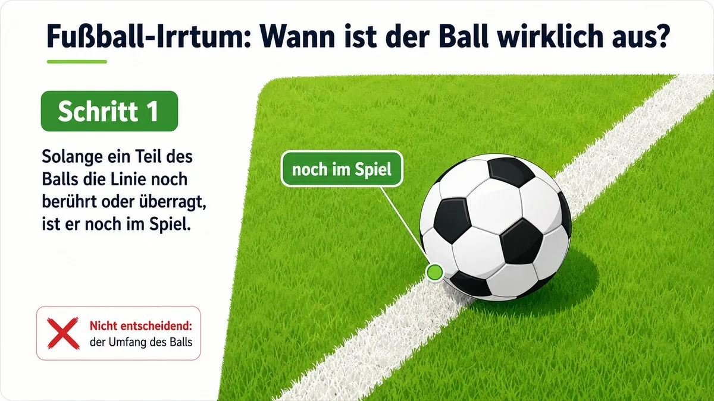
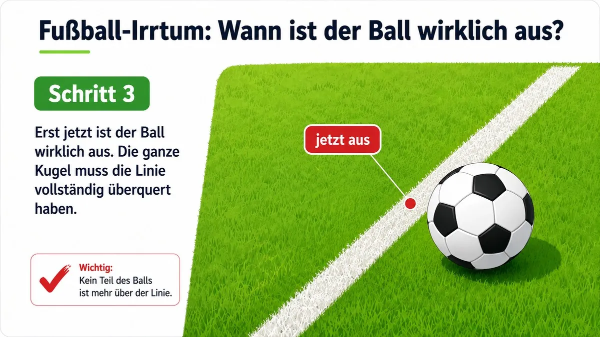
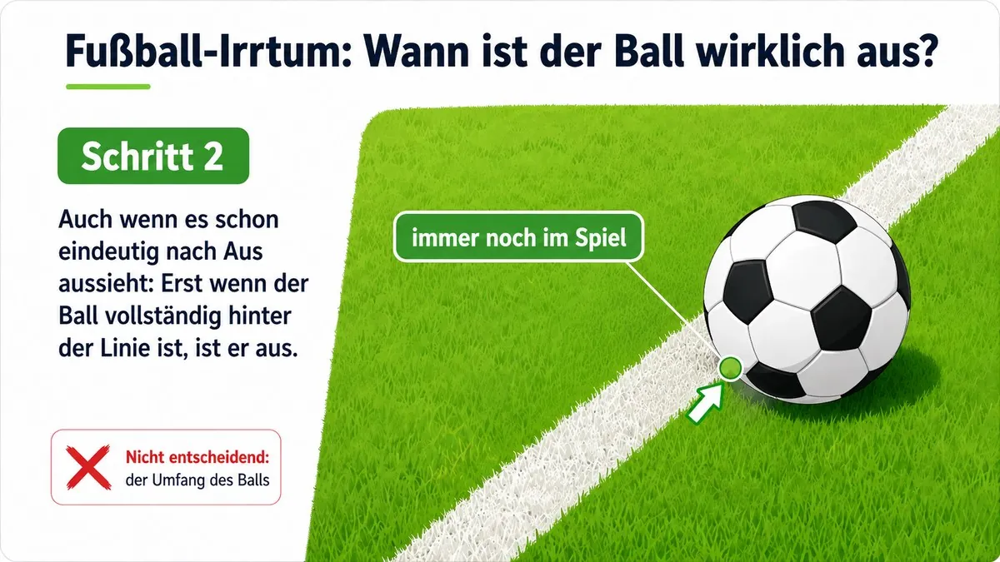
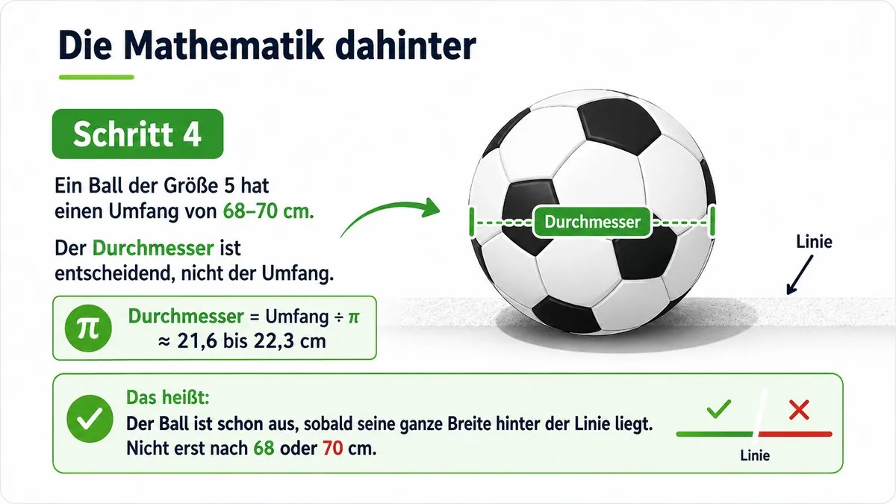
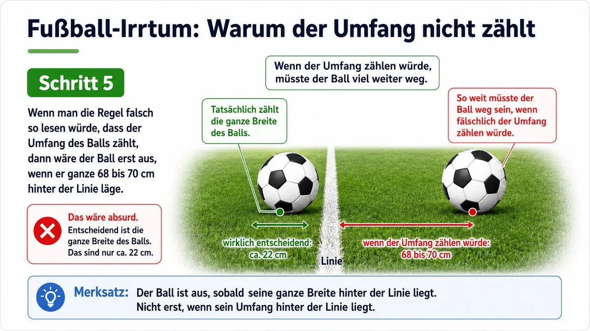

Verstehen
Du lernst neue Begriffe und Verfahren an Beispielen kennen.
Hier findest du curriculumorientierte SOL-Lernpfade für alle Jahrgänge der Oberschule. Du arbeitest Schritt für Schritt, prüfst dein Verständnis und lernst in deinem eigenen Tempo. Klasse 5 bis 9 sind vollständig verlinkt. Für Klasse 10 sind Themenfolge und Modulstruktur vorbereitet.
Mathematik begegnet uns nicht nur im Unterricht oder im Matheheft. Sie ist auch dort wichtig, wo man sie zunächst gar nicht vermutet. Zum Beispiel beim Fußball. Ob ein Ball im Aus ist, lässt sich mit Geometrie genau bestimmen. Dabei kommt es nicht auf den Umfang des Balls an, sondern auf seinen Durchmesser und darauf, ob der Ball die Linie vollständig überquert hat. Klick dich durch die fünf Bilder und entdecke, wie Mathematik sogar dabei hilft, Fußballregeln richtig zu verstehen.
Klicke dich mit „Zurück“ und „Weiter“ durch die fünf Bilder. Die Erklärung steht jeweils unter dem Bild. Am Schluss zeigt ein Zusatzbild, wie absurd es wäre, wenn fälschlich der Umfang statt des Durchmessers zählen würde.





Auch beim Gewitter steckt Mathematik. Ein weit verbreiteter Irrtum lautet: Wo es einmal eingeschlagen hat, schlägt es nie wieder ein. Tatsächlich hat ein Blitz kein Gedächtnis. Jeder Einschlag ist unabhängig vom vorherigen, das ist ein Grundgedanke der Wahrscheinlichkeitsrechnung. Starte die Animation und teste im 100-Blitze-Modell selbst, wo Blitze am häufigsten einschlagen und warum vor allem die Höhe entscheidet, nicht der Zufallsort von gestern.
SOL bedeutet: Du planst, bearbeitest und überprüfst deinen Lernweg möglichst eigenständig. Die Module helfen dir dabei mit kurzen Erklärungen, Aufgaben, Hilfen, Lernchecks und Rückmeldungen.
Du lernst neue Begriffe und Verfahren an Beispielen kennen.
Du bearbeitest Aufgaben in mehreren Schwierigkeitsstufen.
Du kontrollierst deinen Stand mit Lerncheck, Reflexion und Abschlusstest.
Jeder Jahrgang hat eine eigene Seite mit einer curriculumorientierten Themenfolge. Neu sind interaktive Arbeitshefte für die Grundschule, Klasse 1 bis 4. Klasse 5 bis 9 sind fertig. Die weiteren Lernpfade zeigen transparent, welche SOL-Module in welcher Reihenfolge entstehen.
Interaktives Arbeitsheft mit 21 Blättern zu allen Themen von Klasse 1, jeweils in drei Stufen. Mit Vorlesefunktion und A4-Druck.
Arbeitsheft mit 22 Blättern in drei Stufen: Zahlenraum bis 100, Einmaleins, Geld, Uhr, Längen, Symmetrie und Diagramme.
Arbeitsheft mit 22 Blättern in drei Stufen: Zahlenraum bis 1000, schriftliches Rechnen, Teilen mit Rest, Gewichte, Würfelnetze und Kombinieren.
Arbeitsheft mit 22 Blättern in drei Stufen: Zahlen bis 1 Million, alle schriftlichen Verfahren, Größen, Maßstab, Umfang und Wahrscheinlichkeit.
25 fertige SOL-Module: natürliche Zahlen, Größen, Geometrie, Daten und Zufall
27 fertige SOL-Module: Teilbarkeit, Brüche, Dezimalzahlen, Prozente, Geometrie und Wahrscheinlichkeit
29 fertige SOL-Module
Bruchrechnung, Klammerterme, Zinsen, lineare Funktionen, Dreiecke, Prismen und Baumdiagramme. Alle Module sind fertig.
Gleichungssysteme, Wurzeln und Zehnerpotenzen, quadratische Funktionen, Pythagoras, Kreis und Zylinder, Zufall. Alle Module sind fertig.
Quadratische Funktionen, Trigonometrie, Wachstum, Statistik und Abschluss